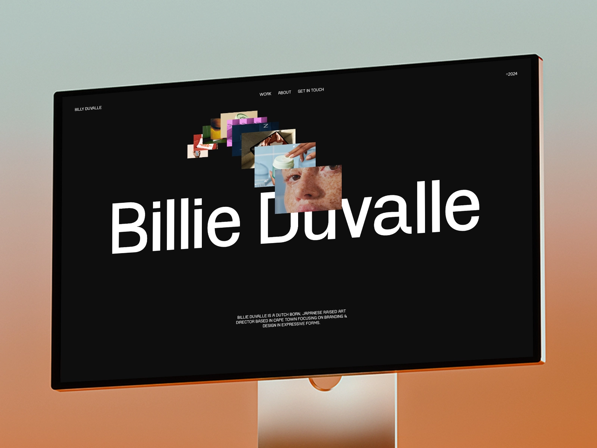
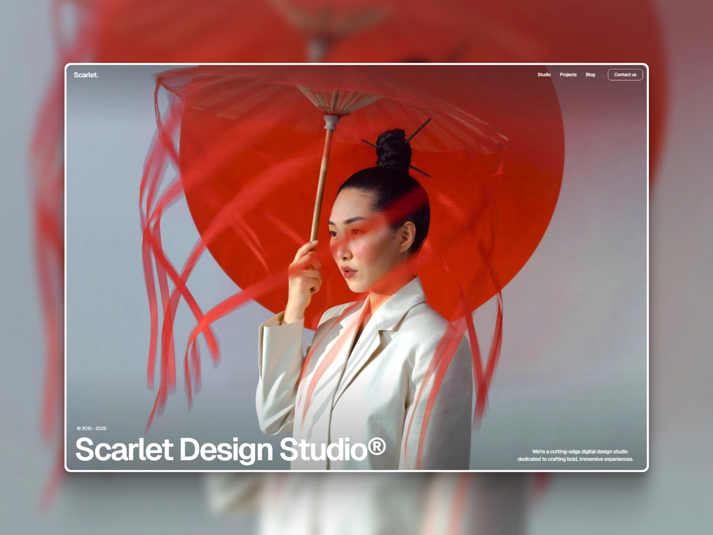
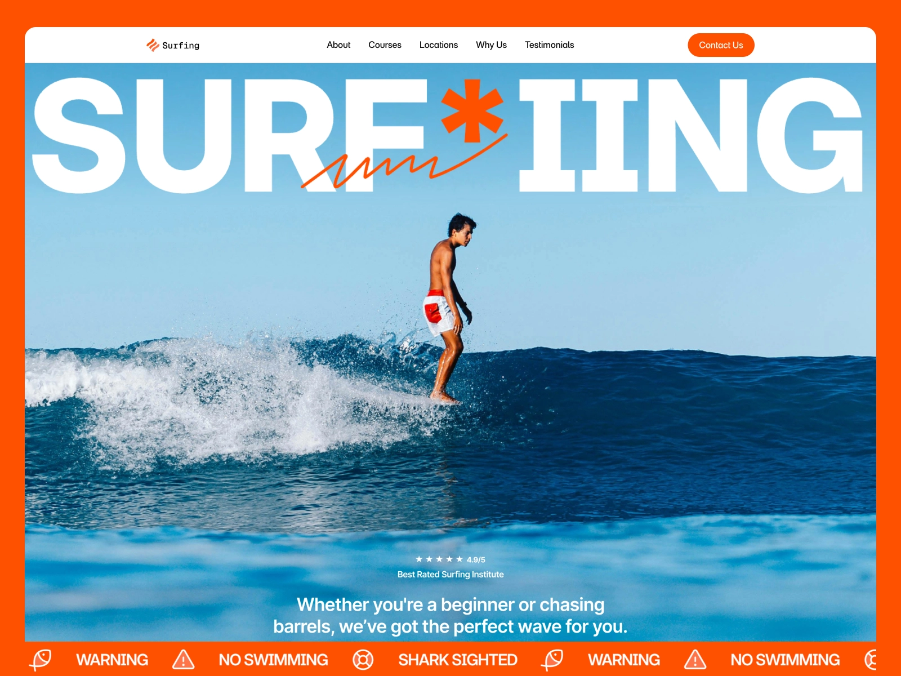
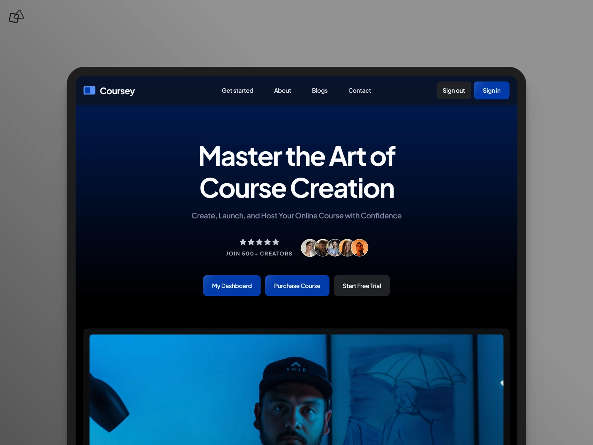
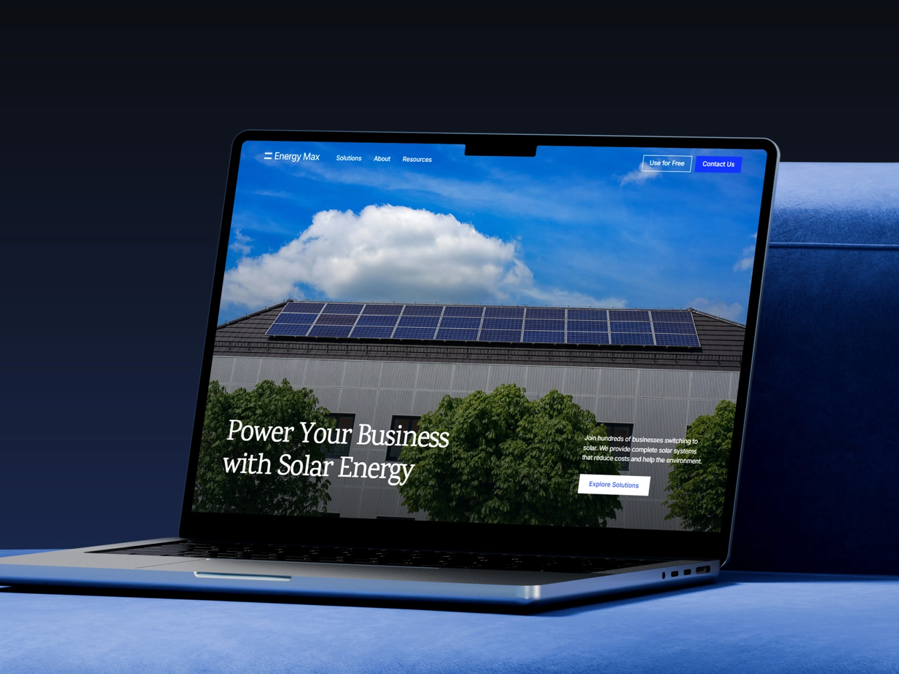
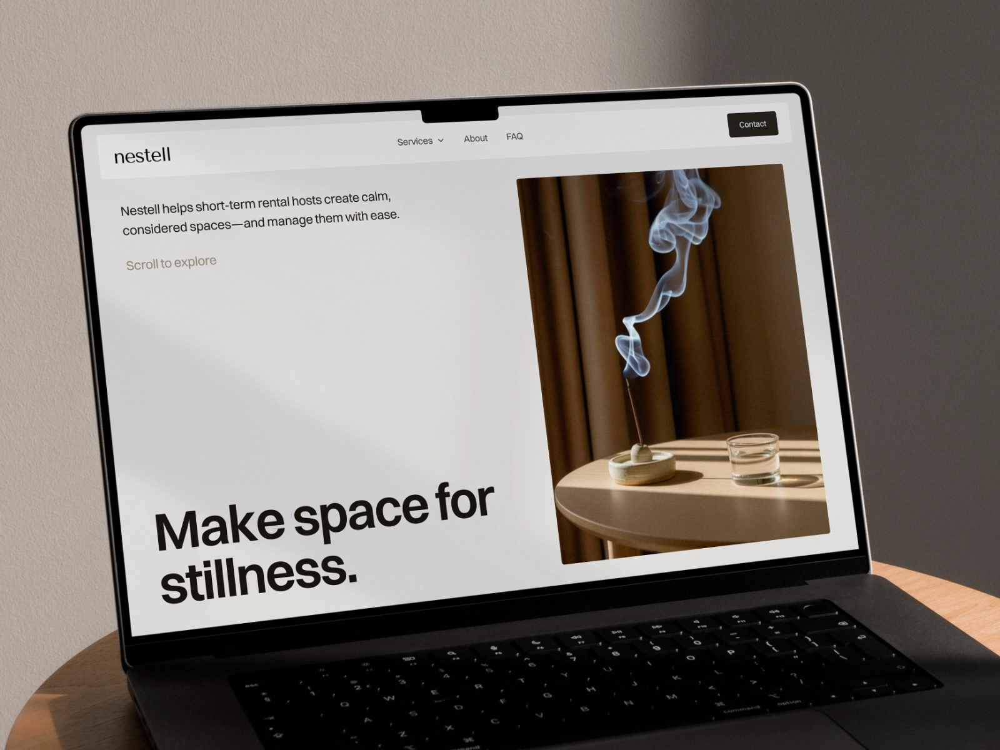

Hello! I am Vincent.
Backend Architect &
Systems Developer
Engineering robust logic and scalable foundations for
complex digital ecosystems.
Building the invisible
power that drives
seamless experiences.
I specialize in the "under the hood" of digital products — where logic meets performance. With a focus on backend architecture, system integration, and database optimization, I transform complex business requirements into stable, high-performance technical solutions.
I believe that the best systems are the ones you never have to think about because they just work. Efficiently. Securely. Scalably.
15+ years of experience
Awards winner with 10,000+ coffees







